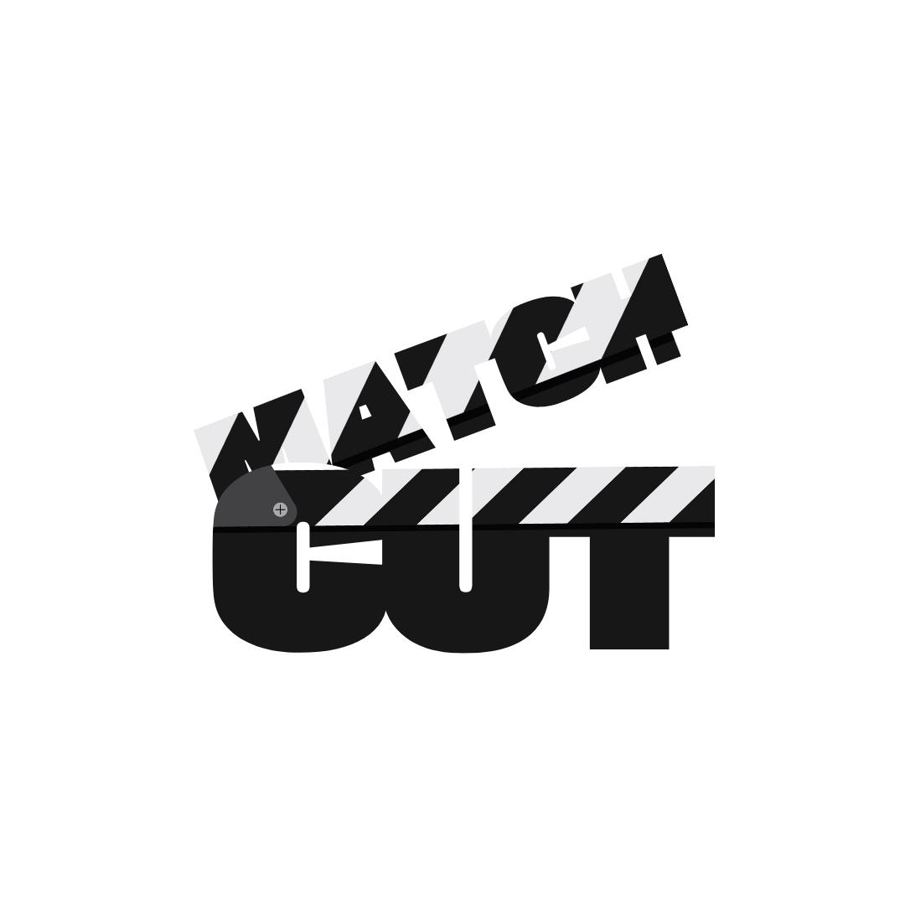
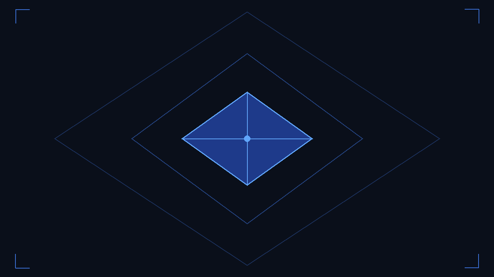
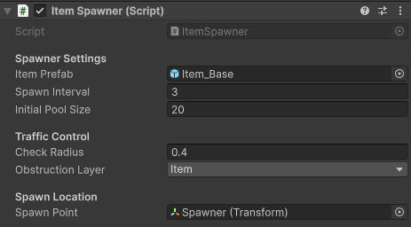
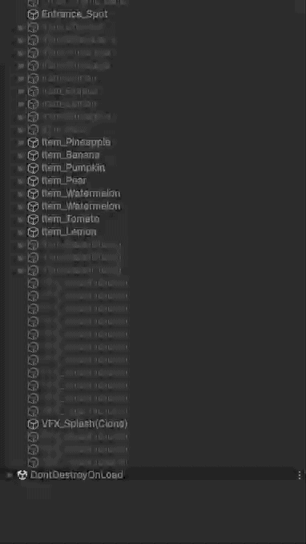
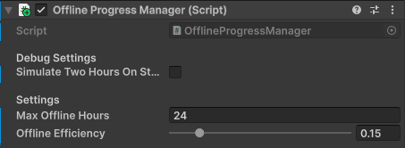
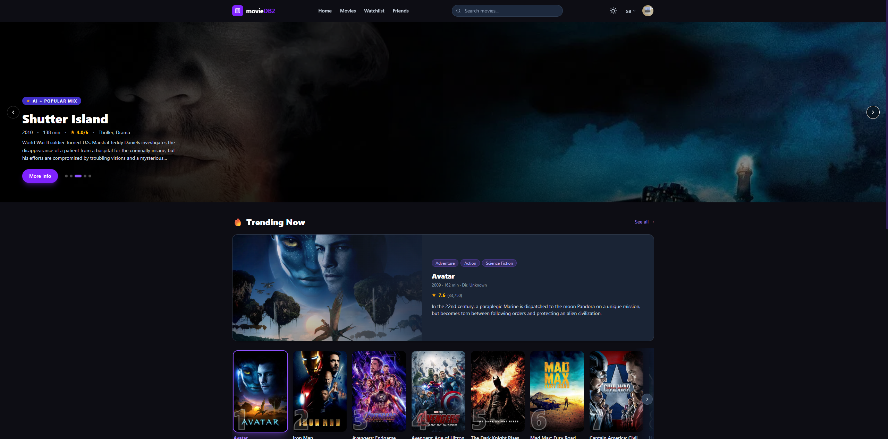
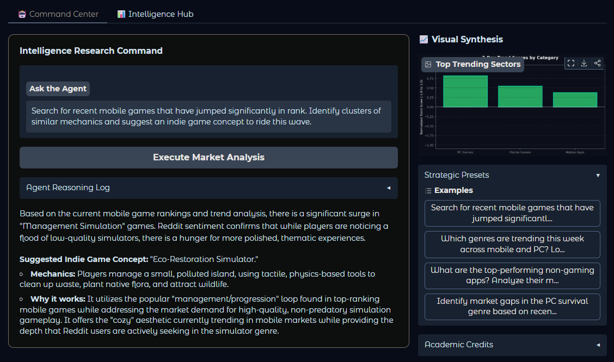

PRESS FACTORY TYCOON

MATCHCUT MOVIE APP
AWS CLOUD INFRA

ONYX MARKET INTELLIGENCE
Press Factory Tycoon
🔊 Unmute the video to hear in-game audio and sound effects.
Project Overview & Engineering Architecture
Press Factory Tycoon is a hybrid-casual factory simulation game built entirely in Unity (C#). The
core gameplay loop is centered around a satisfying and readable progression system: players spawn
items onto a conveyor belt, process them through hydraulic presses, and deliver them to generate
revenue. Players then use these earnings to upgrade machinery, unlock higher-tier items, and switch
between different production eras (e.g., fruit production to mining).
Beyond the casual surface, my primary objective with this project was to engineer a robust,
scalable, and maintainable software architecture that solves common performance and iteration
bottlenecks found in mobile game development.
1. Core Systems & Component-Based Design
In hyper-casual and hybrid-casual development, runtime performance and physics calculations must be tightly controlled. I designed the core gameplay entities to be self-contained and highly optimized.


As seen in the ItemSpawner
configuration and dynamic Hierarchy setup, I built a custom pooling system right into
the core mechanic. By setting an Initial Pool Size, the system completely eliminates
Instantiate and Destroy calls during active gameplay. Objects
are seamlessly recycled (enabled/disabled) as shown in the GIF, effectively preventing
Garbage Collection (GC) spikes. Furthermore, the Traffic Control settings use
lightweight physics overlap checks to ensure items do not spawn on top of each other,
maintaining a smooth, realistic conveyor flow without heavy Rigidbody calculations.

The Delivery Truck acts as the primary economic converter in the game. I engineered this component to encapsulate its own capacity logic, UI bindings, and state-driven animations. By keeping the audio and visual effect variables exposed in the Inspector, the game maintains a clean separation of concerns: the truck handles its own local feedback loop without bloating a central Game Manager.
2. Data-Driven Economy & Progression
To ensure the game is scalable and "designer-friendly", I moved away from hardcoded values and
embraced a fully data-driven architecture using ScriptableObjects.

Every item in the game has its own data profile. This architecture allows Game Designers to independently balance the economy directly from the Inspector. Key variables such as Base Price, Base Chance, and crucial progression math are fully exposed. The UI upgrade slots dynamically read this data to generate upgrade lists at runtime, meaning new item tiers can be added without writing a single line of UI code.

The ProgressionManager acts as
the brain for the game's broader state. It handles the dynamic switching between
entirely different environments (Fruit Era vs. Ore Era) and holds the master master
database of all game items. As shown, the system effortlessly scales and manages global
unlock costs, ensuring the transition between mid-game and late-game content is smooth
and mathematically sound.
3. Scalable Architecture & Safe Bootstrapping
- Lightweight Dependency Injection (DI): To ensure the
codebase remains maintainable, I replaced rigid Singleton patterns with a custom
ServiceContainerandGameInstaller. By introducing abstractions likeIMoneyServiceandIProgressionService, I achieved significantly lower runtime coupling. - Inspector-First Bootstrapping: To guarantee a crash-free
initialization, I centralized the startup wiring. Custom editor tooling within the
GameInstallerfeatures "Auto Wire From Scene" functionality and missing-reference validation checks, minimizing configuration mistakes for the entire team. - State Persistence: A robust
SaveManagerutilizingPlayerPrefsmeticulously tracks and restores complex game states—including money balances, era shifts, and specific machine upgrade levels—ensuring consistent player experience across sessions.
4. Retention Mechanics & Game Feel

A critical feature for player retention in
hybrid-casual games is the offline earning mechanic. I implemented an
OfflineProgressManager that accurately calculates accumulated revenue while the
game is closed. By exposing settings like Max Offline Hours and Offline Efficiency directly
in the Inspector, the game's economy can be easily tweaked for A/B testing to find the
perfect balance between rewarding the player and encouraging active sessions.
I utilized reusable DOTween-based animations to enhance the tactile feedback. This includes animated open/close transitions for world-space UI workflows, real-time "current -> next" stat visualizations on upgrade panels, and the satisfying, synchronized downward crush animation of the press machine interacting with spawned items.
MatchCut — Social Movie Recommendation Platform
FastAPI · Python · NestJS · PostgreSQL · React · SVD · Docker

🎬 MatchCut web application — interactive recommendation dashboard displaying collaborative filtering predictions and content-based metadata metrics.
Project Overview
MatchCut is a full-stack social movie platform where users can discover films, write reviews,
maintain watchlists, follow other users, and receive personalized recommendations. The project is a
team effort built as a capstone, consisting of three independently-deployed services: a NestJS REST API, a React
SPA, and a Python/FastAPI AI Engine — all
orchestrated with Docker Compose and deployed to production.
My ownership was focused on two high-complexity areas: the entire AI
recommendation engine and the backend's recommendations +
onboarding modules — the core intelligence layer of the product.
My Contributions
1. AI Engine — Full Ownership (Python / FastAPI)
I designed and built the entire AI microservice from scratch. It exposes a FastAPI application with multiple recommendation strategies, each serving a different user state, and a model training pipeline that merges production user data with the MovieLens 25M dataset.
User Request → NestJS RecommendationsService
↓
┌─────────────────────────────┐
│ Profile Assembly │
│ reviews + onboarding swipes│
└────────────┬────────────────┘
↓
┌────────────────────────────────────────┐
│ AI Engine (FastAPI) │
│ │
│ POST /api/recommend/dynamic │
│ → Rating-based item-item similarity │
│ → Cosine-weighted candidate scoring │
│ │
│ POST /api/recommend/content │
│ → Content-based similarity matrix │
│ → Genre/metadata overlap scoring │
│ │
│ POST /api/recommend/cold-start │
│ → Onboarding liked/disliked profiling│
└─────────────┬──────────────────────────┘
↓
weightedMergeWithAttribution()
(dynamic × w_d) + (content × w_c)
↓
Final ranked list
Normalizes rating bias via user
mean-centering (rating - user_mean) to highlight relative
likeness.
Utilizes a memory-efficient SciPy CSR (Compressed Sparse Row) matrix to
compute pairwise cosine similarities on the transpose directly, preventing RAM out-of-memory
errors on millions of ratings.
Processes a 9,524 × 9,524 matrix. Extracted
discrete text fields via TF-IDF Vectorization, applying unique collection padding
(no_collection_{tmdb_id}). Overview summaries are embedded using
SentenceTransformers (all-MiniLM-L6-v2) on GPU with L2 normalization
(enabling fast dot-product similarity). Weights: Directors (28%),
Keywords (17%), Collection (14%), Genres
(14%), Cast (11%), Overview (9%), companies
(4%), language (2%), country (1%).
For new users with no ratings, uses onboarding swipe events (like=4.5 synthetic rating, skip=2.0). Aggregates similarity row vectors for all liked films into a profile vector and ranks all unseen films by that score. Falls back to genre-based DB query if AI returns nothing.
The backend merges dynamic and content results using a heuristic weight schedule that adapts to
how many ratings a user has. Both result lists are normalized to [0,1] before merging to prevent
scale bias, then combined as:
score = (dynamic / dynamicMax) × w_d + (content / contentMax) × w_c.
Content 85%
Content 70%
Content 55%
Content 40%
Content 25%
Cold-start slot weight uses exponential decay: β(n) = 0.75 × e−n/8, floored at 0.05 — so onboarding data remains a permanent tie-breaker even for power users.
2. Model Training & CI/CD Retraining Pipeline
I developed a standalone retraining script (standalone_train.py) that builds the SVD
model on the MovieLens 25M base dataset merged with live production ratings exported from
PostgreSQL. To automate this, I configured a scheduled GitHub Actions CI/CD
workflow (weekly-retrain.yml) running every Sunday at 03:00 UTC. The
runner connects to the production server via SSH, pulls active database ratings, trains a fresh
model inside a Docker container, uploads the artifact to DigitalOcean Spaces, and restarts the live
container. To resolve user ID overlaps between the datasets, I applied a 10,000,000 user namespace offset consistently at training and
inference time.
TMDB Data Scraping: Fetch metadata for 9,524 movies from the TMDB API with a rate-limit delay of 0.26s. Saves progress (results and completed IDs) to a local JSON cache every 200 items for crash-resilient resuming.
Load MovieLens 25M base ratings CSV (userId, movieId, rating)
Load production DB ratings export (tmdbId → movieId via
link.csv bridge), apply +10M user ID offset
RMSE Health Check: Runs 5% test split before full training. If RMSE > 1.30, training aborts and the live model is preserved. Warns at > 0.95.
Run standalone_train.py to train the SVD Matrix
Factorization model (100 latent factors, 20 training epochs) via
scikit-surprise on 100% of merged data.
Serialize model to movie_recommender.pkl and upload to
DigitalOcean Spaces (S3-compatible). The workflow
then triggers an SSH docker restart movie_ai on the production server to
reload the fresh model without downtime.
Model Evaluation & Calibration (Taste Profiles Test Suite)
To tune recommendations offline, I built an evaluation suite featuring 10 distinct user
taste profiles (e.g., Nolan Crime, Fincher Thriller, Horror, Animation). The validation
suite utilizes a must_have / nice_to_have / must_avoid scoring system to
quantitatively score recommendations:
Profile Score = (2 × must_have_hits) + (1 × nice_to_have_hits) − (2 × must_avoid_hits)
The initial baseline scorer suffered from false recommendations due to weak metadata matches
(yielding a score of -6 on the Nolan-heavy thriller profile). To resolve this, I
implemented an Improved Confidence-Weighted Scorer applying a similarity threshold
filter (min_sim = 0.08) and confidence factor:
confidence = min(total_sim_weight / 0.3, 1.0). Unconfident matches decay to a neutral
3.0 rating. This refinement successfully eliminated all false-positive recommendations (avoid hits),
raising the validation score from -6 to +5.
3. Backend — Onboarding Module (NestJS)
I built the onboarding flow that converts first-time user swipe events into a machine-readable
preference profile. New users are shown a curated film selection and swipe left (skip) or right
(like). Each swipe is stored as an OnboardingSwipeEvent with a source tag
distinguishing onboarding swipes from later discovery swipes — critical because the AI cold-start
endpoint only uses the onboarding set.
Swipe "like" → rating 4.5, swipe "skip" → rating
2.0. These synthetic ratings are injected into the recommendation profile alongside real
user reviews, merged by movieId with real ratings taking precedence via a
Map deduplication pass.
Onboarding events are also separated into
liked/disliked TMDB ID lists fed directly to the AI cold-start endpoint. The
seenMovieIds set prevents already-shown films from reappearing in
recommendations. Source tagging allows the cold-start weight to decay independently as real
ratings accumulate.
4. Backend — Recommendations Module (NestJS)
The RecommendationsService is the orchestration layer that coordinates between the
user's rating history, their onboarding profile, and the AI engine. It was the most architecturally
complex piece of the backend I wrote.
The final result list is split into a "cold-start slot" and a "profile slot". The cold-start slot size is calculated from the exponential decay weight × requested limit. This ensures that even users with 50+ ratings still see a small fraction of onboarding-informed recommendations as a diversity anchor.
If the AI engine is down (503), the service
catches the error, logs a warning, and falls through to a popularity-ranked DB query
(averageRating DESC, ratingCount DESC). The response meta.source
field accurately reflects which path was taken: dynamic, content,
hybrid, cold-start, or fallback.
Technology Stack
AI Engine: Python 3.10, FastAPI, scikit-surprise (SVD), NumPy, Pandas — item-item & content-based similarity matrices
Model Storage: DigitalOcean Spaces (S3-compatible), boto3 — artifact upload after training
Backend: NestJS 11, TypeORM, PostgreSQL 15 — onboarding & recommendations modules
Frontend: React 19, Vite, Tailwind CSS 4 (team contribution)
Infrastructure: Docker Compose, multi-stage Dockerfiles (dev + prod), Prometheus + Grafana monitoring
Dataset: MovieLens 25M (~25M ratings, ~62K films) merged with live production ratings
AWS High Availability WordPress Infrastructure
VPC · EC2 · RDS · ALB · ASG · LEMP Stack
Project Overview
This project involved designing and deploying a fully production-grade, highly available WordPress application on AWS from scratch. The architecture follows the Stateless Web Tier pattern — the database is completely decoupled from the web servers, meaning any EC2 instance can be terminated and replaced without data loss. The entire web server configuration, from LEMP stack installation to WordPress setup, is automated via a User Data bash script that runs on every new instance boot — so the infrastructure heals itself with zero manual intervention.
Architecture Overview
The infrastructure was built across five sequential phases, each layer depending on the one before it:
Internet
↓
Internet Gateway (IGW)
↓
Application Load Balancer (Wordpress-ALB)
↓ HTTP :80 → Wordpress-TG (Target Group)
├── EC2 Instance (Private-Subnet-A · us-east-1a) ← Auto Scaling
└── EC2 Instance (Private-Subnet-B · us-east-1b) ← Auto Scaling
│ Both run: LEMP stack via User Data script
│ (Nginx + PHP-FPM + WordPress auto-configured)
↓
Amazon RDS (MySQL · t3.micro · 20 GiB)
wordpress-db · Single-AZ · RDS-SG
Custom network isolation
RDS-SG (MySQL only)
Health checks: 200–399
ELB health-driven
Phase 1 — Network & Security
The foundation was a custom VPC with two public subnets (for the ALB) and two private subnets (for the EC2 web servers) spread across different availability zones. An Internet Gateway was attached to the VPC and associated with the public subnets. EC2 instances were placed in the private subnets to keep them off the public internet — traffic reaches them only through the ALB.
Inbound: HTTP port 80 from anywhere, SSH port 22. SSH source was initially set to "My IP" but was changed to "Anywhere IPv4" during debugging to allow remote access from different networks.
Inbound: MySQL/Aurora port 3306, source restricted to WEB-SG only. This ensures the database is never directly accessible from the internet — only from the EC2 web servers.
Phase 2 — Database (Amazon RDS)
A managed MySQL RDS instance was deployed to decouple data persistence from the stateless web tier. Using a managed RDS rather than a database on EC2 means backups, patching, and failover are handled by AWS — the web servers remain truly disposable.
Note: Single-AZ was chosen intentionally for this project since high availability was implemented at the web tier via ALB + ASG, not at the database layer.
Phase 3 — Application Load Balancer
An Application Load Balancer was configured to distribute incoming HTTP traffic across healthy EC2
instances. A key debugging step here: the health check success codes had to be changed from
200 to 200–399 because WordPress returns 302 redirects during
setup, which were incorrectly being flagged as unhealthy targets.
Internet-facing · HTTP:80
Mapped to public subnets
(ALB tier)
EC2 targets in private subnets · WEB-SG
Protocol: HTTP:80
Health check path: /
Success
codes: 200–399
wordpress-alb-214335329
.us-east-1.elb.amazonaws.com
Phase 4 — Launch Template & Automation
The most technically interesting part of this project is the Launch Template's User Data script. Every time the Auto Scaling Group spins up a new EC2 instance, this bash script runs automatically and provisions the full LEMP stack — no manual SSH required.
Updates system packages and installs nginx,
php, php-fpm, php-mysqlnd, php-json,
wget, tar
Patches PHP-FPM config to run under nginx user instead
of apache — critical fix since PHP defaults to Apache
Starts and enables php-fpm service
Downloads latest WordPress, extracts to /var/www/html/
Auto-configures wp-config.php with RDS endpoint, DB
name, credentials via sed
Sets correct file ownership (nginx:nginx) and
permissions on web root
Removes conflicting default Nginx config, writes a custom
nginx.conf with PHP-FPM socket passthrough
Starts and enables nginx
This script went through 3 iterations. The main bugs fixed were the PHP user mismatch (Apache vs Nginx) and the broken default Nginx config conflicting with the custom PHP passthrough config.
Phase 5 — Auto Scaling Group
The Auto Scaling Group ties everything together. It uses the Launch Template to provision instances, registers them automatically with the ALB target group, and uses ELB health checks to detect and replace any unhealthy instance. A notable debugging step: the initial instances had no Public IPv4 DNS — this was caused by the subnets not having auto-assign public IP enabled, which was fixed in the subnet settings.
The ASG activity log showed the system working exactly as designed: when an instance failed an ELB health check, the ASG automatically terminated it and launched a replacement. The activity history confirmed multiple successful launch-terminate cycles during troubleshooting, with the final state being 2 healthy instances both passing health checks.
Result
The final infrastructure delivered a fully working WordPress blog accessible via the ALB DNS endpoint, with 2 healthy EC2 instances behind the load balancer, a live MySQL database on RDS, and a self-healing auto scaling group. WordPress was installed, configured, and a first blog post was published — confirming end-to-end data flow from browser through ALB → EC2 → RDS.
Technology Stack
Networking: AWS VPC, Public Subnets (Multi-AZ), Internet Gateway, Route Tables, Security Groups
Compute: Amazon EC2 (t3.micro, Amazon Linux 2023), Launch Templates, User Data (Bash)
Load Balancing: Application Load Balancer (ALB), Target Groups, Health Checks
Auto Scaling: EC2 Auto Scaling Group (min 2 / max 4), ELB health-driven replacement
Database: Amazon RDS MySQL (t3.micro, Single-AZ, 20 GiB gp2)
Web Stack: Nginx, PHP-FPM, WordPress — fully automated via boot script
ONYX: Agentic Market Intelligence System
LangChain · Gemini · Python · Gradio · SQLite · GitHub Actions

📊 ONYX live dashboard — agentic trend report with visualizations generated from multi-platform data.
Project Overview
ONYX is a fully autonomous, end-to-end market intelligence platform. You ask it a natural-language
question — "What mobile game genres are trending this week?" — and a LangChain ReAct agent
takes over: it scouts live data from Google Play, the Apple App Store, Steam, and Reddit
simultaneously; runs a weighted trend-scoring algorithm; detects cross-platform overlap patterns;
generates a structured analyst report via Gemini Flash; and then self-evaluates and revises that
report against a 5-criteria rubric before presenting the final output alongside rich visualizations.
A nightly GitHub Actions workflow keeps the database fresh and auto-deploys the live app to
HuggingFace Spaces, making ONYX a genuinely production-grade, always-on intelligence feed — not just
a one-shot script.
System Architecture
The system is organized into three distinct layers, each with a clearly defined responsibility:
User Query (Gradio UI)
↓
LangChain ReAct Agent (gemini-3.1-flash-lite)
↓
┌──────────────────────────────────────┐
│ Agent Tools │
│ • collect_mobile_app_data │
│ • collect_mobile_game_data │
│ • collect_pc_game_data │
│ • compute_trends │
│ • detect_cross_platform │
│ • generate_trend_report │
└──────────────────────────────────────┘
↓
SQLite (7-day rolling snapshots)
↓
Report Generator (Gemini Flash)
↓
Evaluator LLM → Revision Loop (max 2×)
↓
Final Report + Charts → Gradio UI
1. Multi-Source Data Collection
The agent autonomously orchestrates data collection across four live platforms in a single pipeline run. Each collector is a deterministic Python module registered as a LangChain tool, so the agent can selectively call them based on the user's query.
Top charts, ratings, installs, genres via google-play-scraper
Top free apps/games by category via iTunes RSS API
Top sellers, genres, pricing, reviews via Steam Web API + SteamSpy
PRAW across r/androidgaming, r/iosgaming, r/pcgaming
2. Weighted Trend Scoring Engine
Raw data alone doesn't tell you what's trending — you need a signal. I built a custom weighted formula that combines three independent market signals into a normalized score ranging from approximately −1.0 to +1.0:
score = (rank_change × 0.4) + (review_delta × 0.3) + (sentiment_shift × 0.3)
Normalized chart momentum: how quickly a title is climbing the charts relative to its prior position.
7-day review volume velocity: new reviews this week vs. last, revealing organic growth bursts.
Reddit community signal derived from average upvote ratio, capturing grassroots hype before it shows in charts.
A rolling 7-day snapshot system (SQLite) tracks historical baselines, so the delta calculations are always grounded in real prior state — not assumptions.
3. Self-Evaluating Report Generation
One of the more technically interesting aspects of this project is the report pipeline. Rather than simply generating a report and returning it, the system uses a second LLM call as an independent evaluator. Every generated report is automatically graded against a 5-criteria rubric:
If the evaluator scores a report below 0.7 / 1.0, the system automatically triggers a revision pass — feeding the score, the failing criteria, and the original report back to the generator. This loop runs a maximum of 2 times, ensuring quality without infinite retries.
This LLM-as-judge pattern is a core technique in production agentic systems, and implementing it end-to-end — including the structured JSON scoring response and the conditional revision branching — was the most challenging and rewarding part of the project.
4. Automated Deployment & Live Data Pipeline
A scheduled cron job at 00:00 UTC runs the full data collection pipeline, updates the SQLite database with fresh snapshots, and pushes the updated database to HuggingFace Spaces — keeping the live demo's intelligence current every 24 hours automatically.
The Gradio app runs on HuggingFace Spaces (CPU Basic free tier). A second workflow handles code deployments via manual trigger. The app features a custom dark "ONYX Stealth" theme with Electric Cyan accents, a Command Center query tab, and an Intelligence Hub live stats panel.
Technology Stack
LLM / Agent: Google Gemini Flash (gemini-3.1-flash-lite)
via LangChain ReAct (create_react_agent + AgentExecutor)
Data Collection: google-play-scraper, iTunes RSS API, Steam Web API, SteamSpy, PRAW (Reddit)
Data Processing: Pandas 2.2, NumPy 1.26
Database: SQLite with auto-schema init, 7-day rolling snapshots
Visualization: Matplotlib 3.9 + Plotly 5.24 (trend bar charts, top-movers tables, genre pies)
UI & Deployment: Gradio v5, HuggingFace Spaces
CI/CD: GitHub Actions (nightly cron + manual HuggingFace sync)
My Contribution
- Designed, architected, and built the entire end-to-end system as the sole creator and developer.
- Built all four live data collectors (Google Play scraper, App Store RSS parser, Steam Web API + SteamSpy wrapper, PRAW Reddit crawler).
- Designed and implemented the trend scoring engine — including the weighted signal formula, 7-day snapshot diff logic, and cross-platform overlap detection.
- Architected the LangChain ReAct agent orchestrator (using
gemini-3.1-flash-lite) for autonomous multi-turn reasoning and tool invocation. - Developed the LLM-as-a-Judge self-evaluation pipeline, grading generated report files against a 5-criteria quality rubric with a feedback-driven revision loop.
- Architected the SQLite database layer with automated schema migrations and rolling data retention patterns.
- Built the entire interactive Gradio web application, custom dark visual styling, and data visualization dashboards.
- Configured the complete CI/CD deployment pipeline via GitHub Actions schedules to automate nightly data collection, database updates, and HuggingFace Spaces syncing.
Resume
Download CV (PDF)Profile
Graduating Computer Engineering student (3.59/4.00 GPA, ranked 2nd in department) with a strong foundation in software engineering across AI systems, backend development, cloud infrastructure, and mobile game development. I enjoy working on technically challenging problems end-to-end — from system design to deployment — and have a track record of shipping production-ready projects independently. Equally comfortable in Python, TypeScript, and C#, with a growing focus on applied AI and LLM-powered systems. Driven by clean architecture, real-world impact, and the pursuit of building things that actually work at scale.
Education
Bahcesehir University
Bachelor of Computer Engineering (GPA: 3.59/4.00) | Sept. 2022 – July 2026 (Expected)
- Ranked 2nd in the Computer Engineering Department among 3rd-year students.
- Relevant Coursework: Mobile Game Development, Game Business, Game Marketing, Deep Learning, Data Science, AWS Cloud Computing.
Experience
Software Development Intern – IFS Turkiye
June 2025 – Aug. 2025
- Developed a real-time data visualization platform using Node.js, Express.js, and MongoDB.
- Optimized RESTful APIs and NoSQL schemas for high-performance data processing.
- Gained insight into large-scale ERP software lifecycles and industrial-grade development methodologies.
Projects
Social Movie Recommendation System | NestJS, PostgreSQL, FastAPI, Python
Dec. 2025 – Present
- Built a personalized recommendation pipeline by integrating a FastAPI AI engine with a NestJS backend, dynamically fetching user-based movie suggestions from review history.
- Designed and implemented recommendation models in Python, including dynamic item-based filtering, SVD collaborative filtering, and a retraining pipeline that updates recommendations from newly collected user ratings.
ONYX — Agentic Market Intelligence System | LangChain, Gemini, Python
Spring 2026
- Designed and built a fully autonomous LangChain ReAct agent that collects live market data from Google Play, App Store, Steam, and Reddit simultaneously, then produces structured analyst reports via Gemini Flash.
- Engineered a weighted trend-scoring engine (rank momentum × 0.4 + review velocity × 0.3 + Reddit sentiment × 0.3) with a 7-day SQLite rolling snapshot system for delta-based signal calculation.
- Implemented an LLM-as-a-Judge self-evaluation loop: a second model instance grades every generated report against a 5-criteria rubric and triggers autonomous revision passes until quality threshold (0.7/1.0) is met.
- Deployed to HuggingFace Spaces with a nightly GitHub Actions CI/CD pipeline that refreshes the database and syncs the live app automatically every 24 hours.
AWS Cloud Infrastructure Project | AWS, VPC, ALB, ASG, S3
Jan. 2026
- Designed a high-availability network using VPC and Private Subnets with NAT Gateways for secure isolation.
- Implemented Application Load Balancers and Auto Scaling Groups to ensure system uptime and scalability.
Press Tycoon Mobile Game | Unity, C#
Dec. 2025 – Present
- Engineered a lightweight Dependency Injection (DI) architecture and Object Pooling system, minimizing code coupling and optimizing runtime efficiency for mobile constraints.
- Developed a data-driven, scalable upgrade system utilizing interface-based service resolution (IMoneyService, etc.) and dynamic prefab generation for rapid iteration.
- Integrated GameAnalytics SDK to build dashboards, tracking in-game events, player funnels, and session metrics.
- Designed core gameplay loops focusing on marketability, applying theoretical concepts of CPI, LTV, retention, and "Tiktokability" to evaluate product viability.
Game Business & Marketing Academic Projects
Spring 2025 – Fall 2025
- Formulated a comprehensive business plan for a fictional studio "Waterproof Games", detailing cost analysis, budget forecasting (Excel), and monetization strategies.
- Designed and presented a professional pitch deck for a PC game concept "Leviathan Protocol", focusing on target audience acquisition and market positioning.
Technical Skills
Languages: C#, C++, JavaScript, Typescript, Java, Python, SQL (Oracle, PostgreSQL), HTML/CSS
Frameworks & Engines: Node.js, Express.js, Nestjs, FastAPI, Unity Engine
Cloud & Tools: AWS (VPC, EC2, S3, ALB), Git, MongoDB, Docker, VS Code, Visual Studio
Extracurriculars: Co-Founder at BAU Piston Student Club | C-Level Licensed Motorsport Marshal (TOSFED) | TEMA Foundation Volunteer
Bio
A lifelong gamer turned Computer Engineer, passionate about building scalable systems, hit mobile mechanics, and engaging gameplay experiences.
I’ve been a passionate gamer since I was 9 years old, actively exploring almost every genre and platform imaginable. Today, I bring that lifelong passion into my career as a developer. I bring a blend of engineering discipline and creative game design, collaborating closely with development tools like Unity and AWS to craft systems that excite players and drive results. From backend databases to frontend user interfaces, I take pride in shaping software that’s not only highly optimized and functional but also contributes meaningfully to player engagement. Whether I'm designing a mathematically sound idle economy or architecting a robust cloud infrastructure, my goal is always to deliver experiences that are fun, polished, and technically sound.
Some of my favourite genres & games
- Competitive: League of Legends, CS2, Battlefield (Fan since BF4), Doom Eternal, Doom: The Dark Ages
- FPS: Battlefield (Fan since BF4), Doom Eternal, Doom: The Dark Ages
- Extraction Shooters: Escape from Tarkov, ARC Raiders
- Roguelike & Souls-like: Dark Souls (1-3), Sifu, Dead Cells, Hades, Vampire Survivors, Balatro
- RPG & Adventure: Cyberpunk 2077, Assassin's Creed (Origins/Odyssey), Ori (Blind Forest / Will of the Wisps)
- Survival & Sandbox: Subnautica & Below Zero, Valheim, Minecraft
- Strategy: Europa Universalis IV, Age of Empires 2
- Sim Racing: iRacing, Assetto Corsa Competizione
- Mobile: Clash Royale, Archero, Color Block Jam, Chess
What gets me excited about games
- I’m passionate about creating responsive, skill-driven, and captivating core gameplay.
- Fulfilling and rewarding progression systems backed by data analytics and solid math.
- Gaining more loot, levelling up, unlocking abilities, and becoming more powerful.
- Simple, scalable, and intuitive build crafting opportunities.
- Games that balance depth with simplicity, offering satisfying decision-making and intriguing challenges.
- The intersection of hardware precision and software engineering.
- Making interesting decisions on what cards, buffs, or abilities to take that have a large impact on the outcome.
- Polished, free-to-play mobile experiences.
⚡ Beyond the Screen
Outside of coding and game development, I am deeply interested in racing and I am a marshall at TOSFED. I am an avid sim racing rig enthusiast, combining my love for automotive precision with virtual environments. I also spend time practising guitar and also really like to take a walk around the city as much as I can.
Let's Connect
Whether it's about a potential role, a project collaboration, or talking about game economies, feel free to reach out.